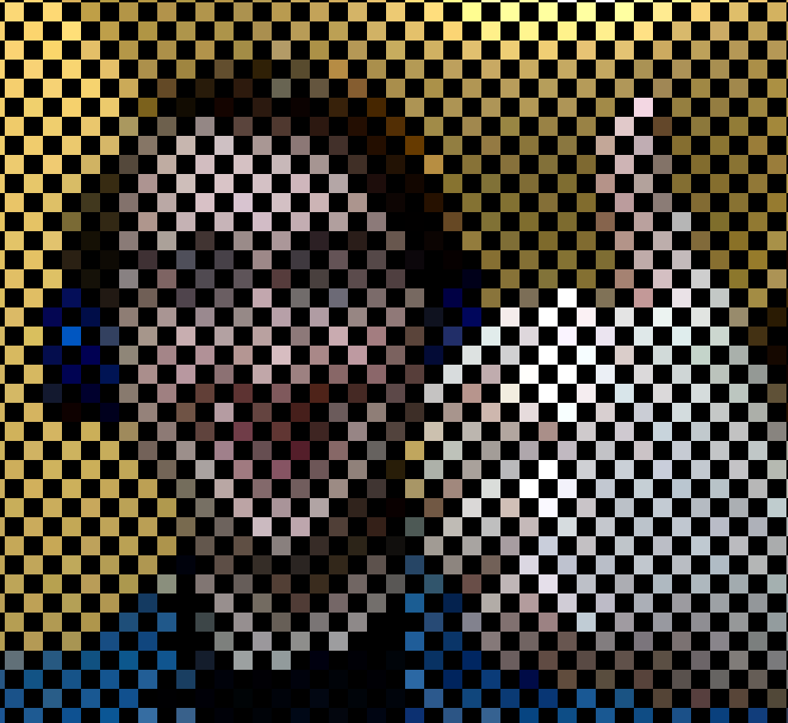
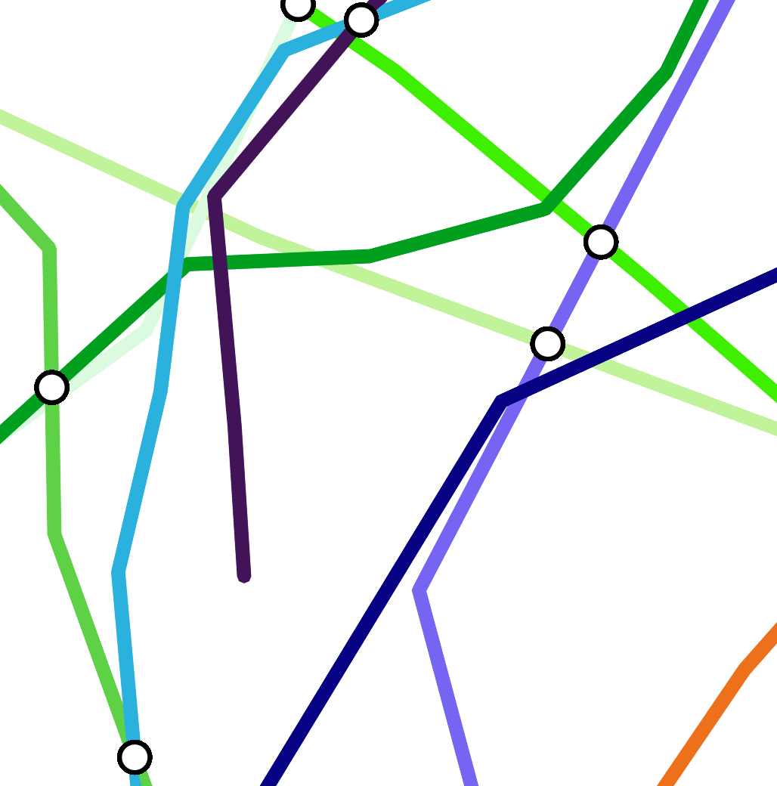

Programming Stuff
Difference Filter
p5.js and p5.dom
Reactor Webpage
HTML and Bootstrap

Checkerboard
Another video filter thing, this one runs far worse.
Checkerboard
p5.js and p5.dom

Subway System Generator
Tries to generate basic subway maps. Click to add stations, press space to add a station without adding new lines.